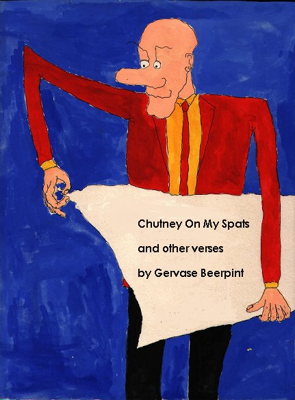

Thursday, March the 18th, 2004
back to: title, date or indexes

Gervase Beerpint's latest collection, Chutney On My Spats & Other Verses will be published next week on Pansy Cradledew Day (26th March). Says Gervase of his new work: “This is a new direction for me. I used to write sat at my desk facing south, but these grandly poetic soul-emanations were composed in my temporary billet at an Antarctic weather station, so I couldn't help but look to the north, and that has been a wonderful inspiration. Mrs Gubbins has hailed it as my best work. What do you think of these tough reindeer-hide snow-boots I'm wearing? I think I cut quite a dash, don't you?”
Hooting Yard on the Air, April the 21st, 2011 : “Anniversary” (starts around 18:05)
Hooting Yard on the Air, January the 29th, 2015 : “Galahad” (starts around 12:25)
Hooting Yard on the Air, July the 5th, 2018 : “The Pratincole” (starts around 26:07)